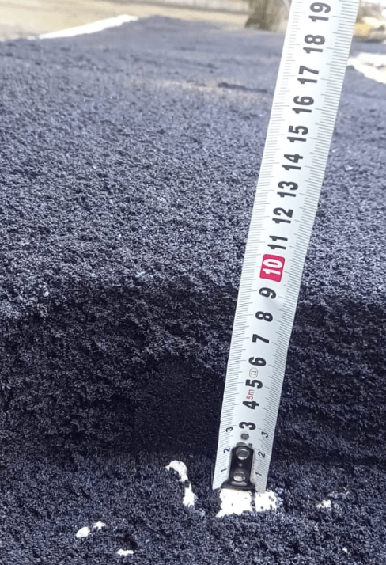
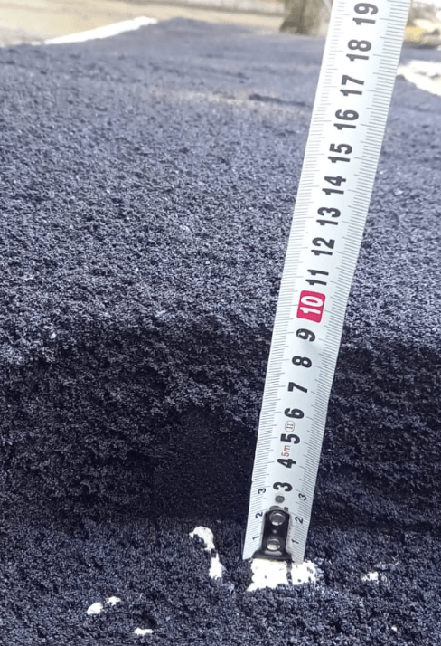

Асфальт
 

Мы предлагает Вам, ознакомиться с ценами на асфальт - Прайс-лист на асфальт. (Цены на асфальт от 1 мая 2022 года.)
Асфальт - что это?
Асфальт может быть природного и искусственного происхождения. Часто словом асфальтназывают асфальтобетон - искусственный каменный материал, который получается в результате уплотнения асфальтобетонных смесей. Классический асфальтобетон состоит из щебня, песка, минерального порошка (филера) и битумного вяжущего (битум, полимерно-битумное вяжущее; ранее использовался дёготь, однако, являясь крайне неэкологичным, он в настоящее время не применяется).
Асфальт - прочный цемент, который легко связывается, водостойкий и надежный, и особенно успешно используется в строительстве дорог. Он также стойкий к воздействиям большинства кислот, щелочей, и поваренной соли. Асфальтом покрыты более чем 90% автомобильных дорог в России. Асфальт называют битумным материалом, так как он содержит в себе битум, углеводородный материал, растворимый в дисульфиде углерода.
Асфальт - высококачественный, тщательно разработанный, хорошо контролируемый материал, который изготавливают из агрегатного материала (камни, песок, гравий) и асфальтного цемента как связующего материала. Асфальтное покрытие делают, смешивая нагретый асфальтный цемент с наполнителями, перемешивают и загружают сразу в грузовики для доставки на стройку или хранят в бункерах.Асфальтобетон
Асфальтобетон - строительный материал в виде уплотненной смеси: песок, щебень, минеральный порошок и битум. Перед смешением, составные части высушивают и нагревают до температуры 110-160°C. Различают горячий асфальтобетон, содержащий вязкий битум, укладываемый и уплотняемый при температуре не ниже 120°C; теплый - с маловязким битумом и температурой уплотнения 40-80°C; холодный - с жидким битумом, уплотняемый при температуре окружающего воздуха, но не ниже 10°C. Асфальтобетон может быть крупно-, средне-, мелкозернистым и песчаным (наибольшая крупность зёрен, соответственно, 40-25-15-5 мм).
Плотные дорожные асфальтобетоны {горячие и холодные) в зависимости от количественного содержания в них крупного или мелкого заполнителя подразделяют на пять типов: А, Б, В, Г, Д. Например: тип А содержит 50-65% щебня; тип Б содержит 35-50% щебня или гравия; тип В содержит 20-35% щебня или гравия. Кроме того, плотные горячие и теплые асфальтобетоны подразделяют на три марки - I, II, III в зависимости от качественных показателей.
Применение асфальтобетона для покрытий дорог, эксплуатируемых плоских кровель, в гидротехническом строительстве, аэродромов. В зависимости от нагрузок и климатических условий к асфальтобетону предъявляются соответствующие требования по плотности, прочности, сдвигоустойчивости, водостойкости. Для приготовления асфальтобетона используют фракционированные минеральные материалы и битумы, качества которых регламентируются государственными стандартами. Для уплотнения жестких и пластичных масс применяют тяжелые и средние катки. Литую асфальтобетонную массу часто уплотняют специальными валками, легким катком или не уплотняют.